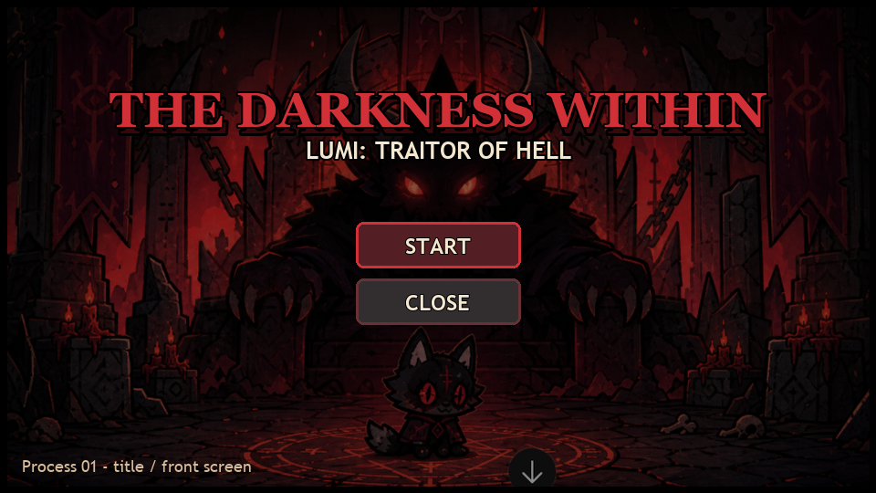
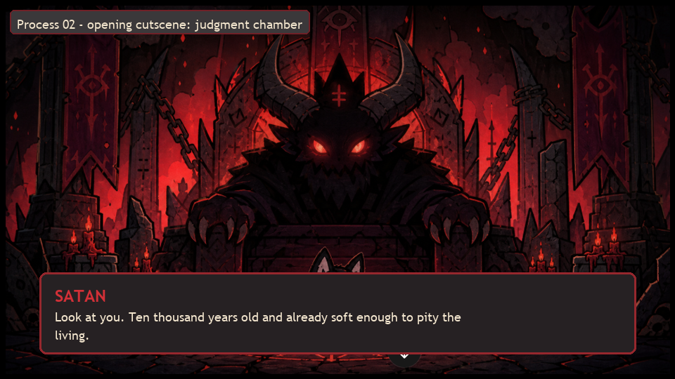
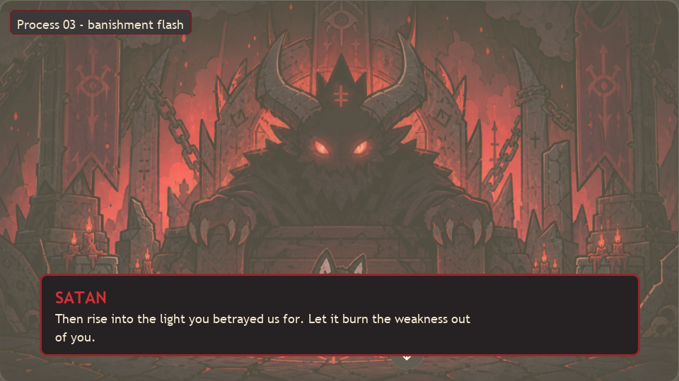
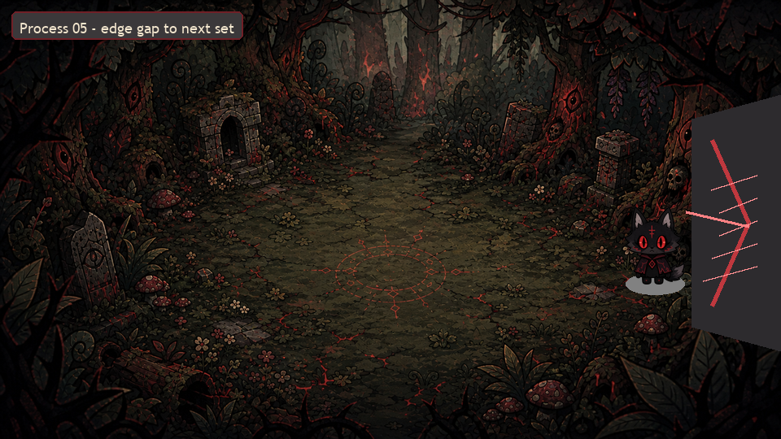
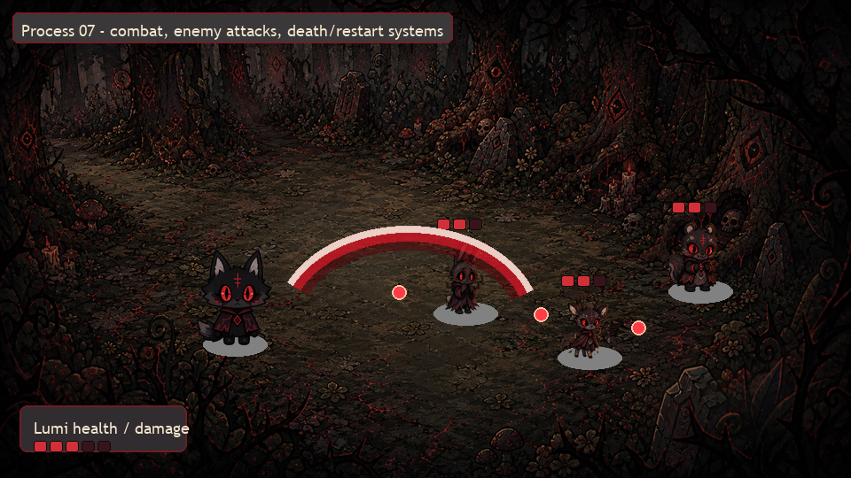
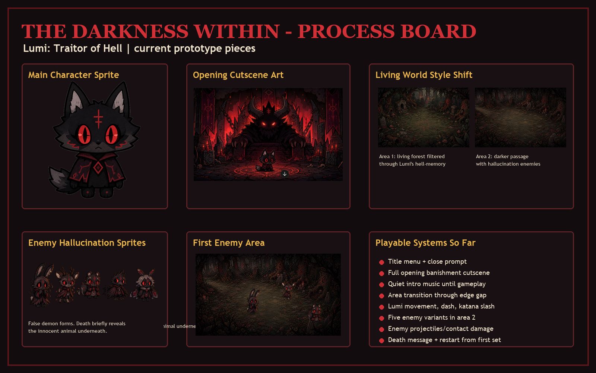
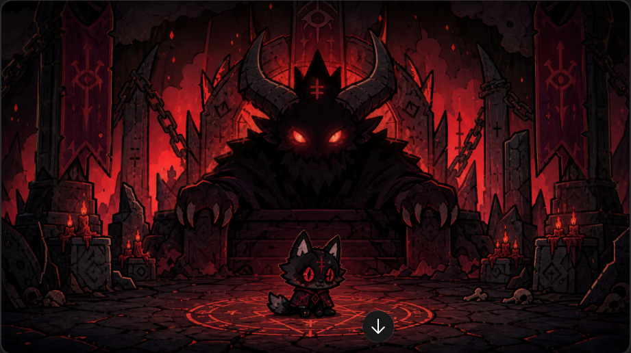
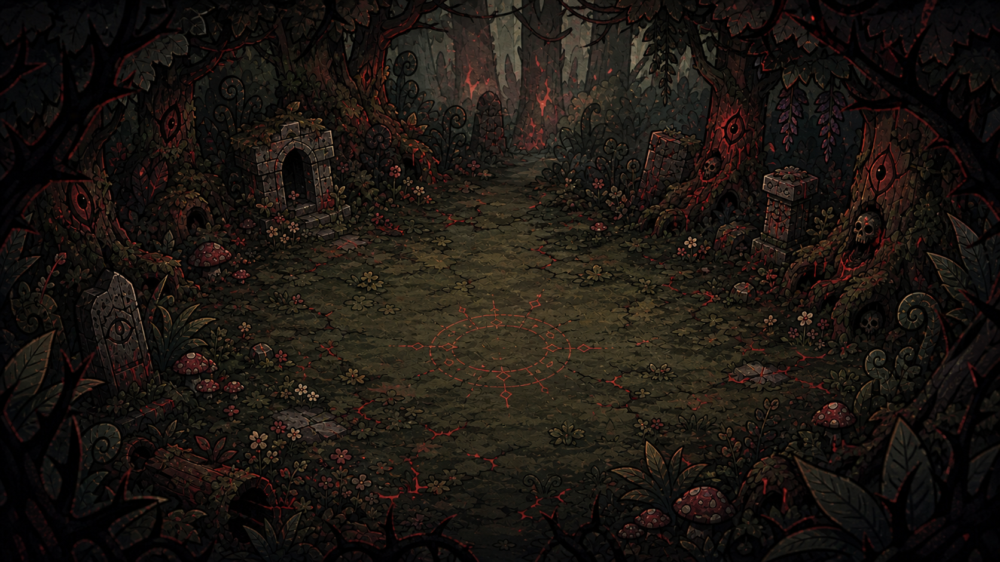
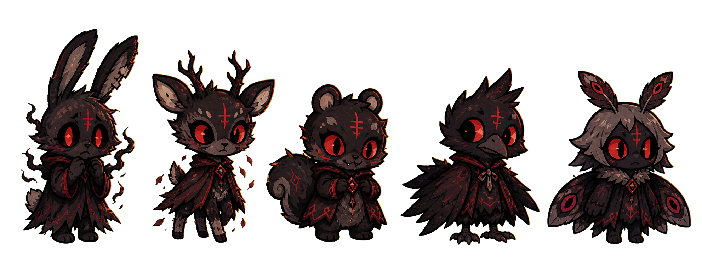

Lumi gets thrown out of Hell and wakes up in a forest that should be peaceful. She cannot see it that way. To her, everything living looks suspicious, cursed, or ready to attack.
Lumi is a young demonic wolf from Hell. After being judged and banished, she lands in a forest and tries to survive. The player moves, dashes, attacks with a katana, and pushes into a second area full of hostile-looking creatures.
What the game slowly questions
The enemies might not be demons. They might be animals. The forest might not be evil. Lumi may be dragging Hell with her, turning unfamiliar life into something she understands: danger.
Research Dashboard
The research was not decoration. It changed the game.
The references helped decide how the game should look, what the enemies mean, and how the player should read Lumi's point of view.
01
Paper Mario
Inspired the flat, storybook cutout feeling. Characters should feel like illustrated pieces moving through a staged world.
02
Cult of the Lamb
Helped define the cute-but-horrific contrast: soft animal forms, dark rituals, danger, and comedy sitting too close together.
03
Unreliable Mechanics
The game should not only say Lumi is confused. Combat, enemy design, and death states should make the player question reality.
04
Visual Morality
Sharp shapes, red eyes, and dark silhouettes can trick the player into labeling something evil before the story complicates it.
Process Screenshots
From rough idea to playable slice.
These screenshots show the path of the prototype: title, judgment, banishment, forest, combat, and the process board. The project got stronger when the visuals stopped being just “cool dark stuff” and started supporting Lumi's unreliable perception.

Title screen. First mood check: red, black, storybook horror.

Opening judgment. Satan becomes the first voice of pressure and punishment.

Banishment flash. A fast, dramatic transition from Hell to the living world.

Navigation problem. The exit gap made the world feel like a level, not just a picture.

Combat tuning. Dash, katana, enemy attacks, hit feedback, health, and restart had to read quickly.

Process board. The messy thinking space: references, assets, notes, and decisions.
Ups, Downs, Pivots
The mess is where the game actually became interesting.
What worked
Lumi became a strong main character once the cute/horror contrast was pushed harder.
The forest backgrounds made the world feel alive but wrong.
Putting combat after the cutscene made the prototype feel like a real game slice.
The enemy area gave the project a clear mechanical center.
What fought back
Some early assets did not match each other, so the visual style had to be tightened.
The game risked becoming “dark because dark” until the perception idea gave it meaning.
Combat feedback needed multiple passes so hits, damage, and danger were readable.
The final site originally felt too clean, which clashed with the game itself.
Character + World
Lumi is cute, sad, dangerous, and unreliable.
Lumi
Lumi is not designed as a normal hero. She is small and expressive, but her background is Hell, punishment, and survival. Her softness matters because it makes the violence more complicated.
The player is not simply controlling Lumi. The player is also trapped inside the way Lumi interprets the world.



Final Product
The current build is a focused vertical slice.
It is not pretending to be a finished five-hour game. It is a working prototype that proves the story, art direction, and core interaction can exist together.
What is playable
Title screen with Start and Close buttons.
Opening cutscene where Satan banishes Lumi.
First forest area where Lumi wakes up confused.
Area transition through the forest gap.
Second forest area with five hallucination enemies.
Movement, dash, katana attack, enemy projectiles, health, death, and restart.
At first, the enemies were just enemies. The better idea was making the player wonder whether Lumi is fighting monsters, memories, or innocent creatures she cannot understand.
AI helped, but it did not choose the soul of the project.
AI/Codex helped organize the final site, structure HTML/CSS, shape case study language, and support the JavaScript prototype. The project decisions still came from editing: choosing the premise, pushing the tone, rejecting generic parts, and deciding that Lumi's perception had to be the center.
Canvas Submission
Paste-ready submission block.
Live GitHub Pages URL:
https://paulsaini-svg.github.io/learning-guthub2/
GitHub repository URL:
https://github.com/paulsaini-svg/learning-guthub2
Milanote board link:
https://app.milanote.com/1WlsTv1mD0Gp9r/command-center?p=QNYmC8qIito
Brief process note:
1. I used AI/Codex to help organize the final project site, structure the HTML/CSS, shape the case study language, and support the browser-game prototype work in JavaScript.
2. I revised the concept, tone, project direction, asset choices, game pacing, enemy meaning, and final presentation decisions myself after the AI-generated drafts. The main design choice was making Lumi's perception part of the gameplay, so the player questions whether the forest enemies are real threats or distorted living-world animals.